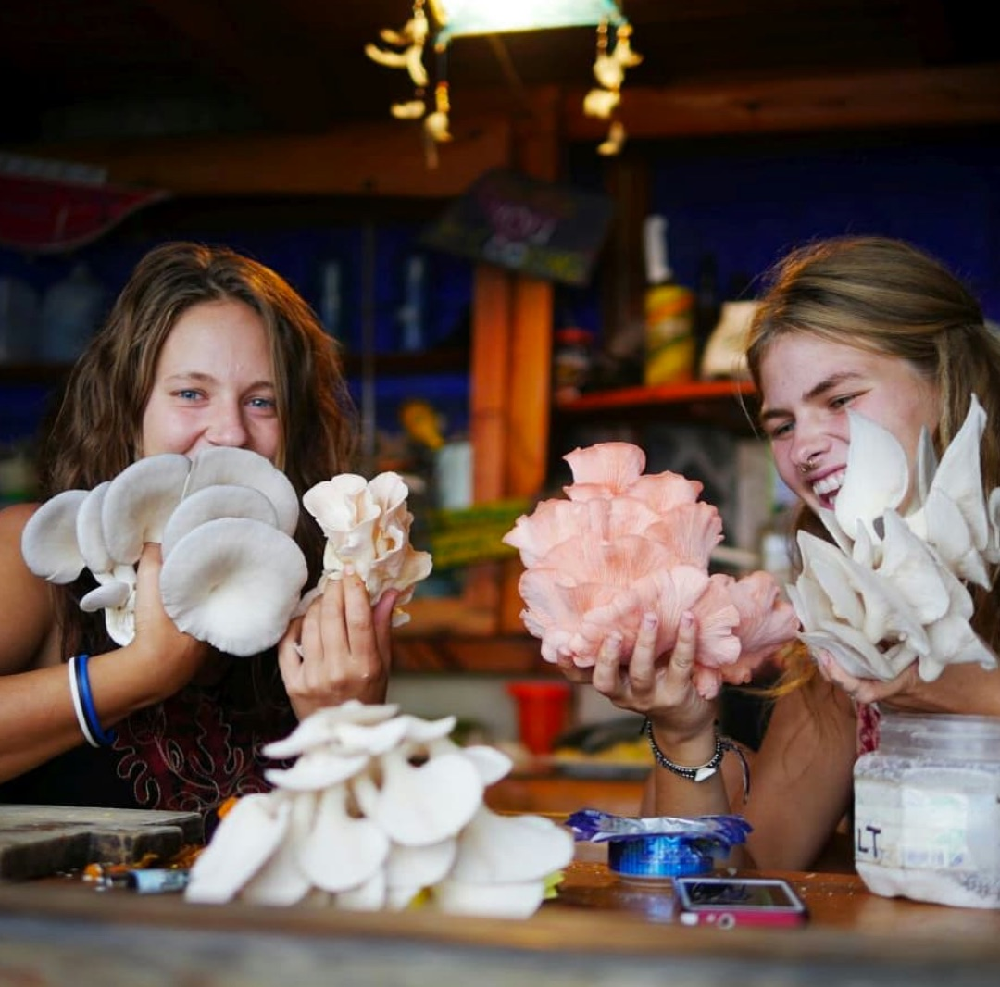

Mushrooms are more closely related in DNA to humans than to plants.
Mushrooms are comprised of 85-95 % water.
There are over 30 species of mushroom that actually glow in the dark.
Mushrooms are the only non-animal fresh food source of B12.
Honey mushrooms are among the largest living organisms on Earth.
The plates under the the cap of a mushroom are called gills.
There are more amino acids in mushrooms than in corn, peanuts, or soybeans.

Did you know: cont'd
Mushrooms are a fungus, and unlike plants, mushrooms do not require sunlight to make energy for themselves.
The worlds largest producer of edible mushrooms is China which produces about half of all cultivated mushrooms.
There are approximately 70 miles of mycelium (the root of the mushroom)
in one square inch of colonized organic matter, such as a decomposing tree trunk.
Mushrooms grow from microscopic spores, not seeds.
There are approximately 11,000 different types of mushrooms that have been identified
in North America
Like humans, mushrooms can't photosynthesize so they produce CO2
Some ancient civlizations called mushrooms 'little teachers.'